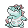

#159 CROCONAW

TYPE:
WATER
Pokedex Description
Pokémon Gold / Silver:
If you lose a fang, another one will grow in its place. It always has 48 fangs in its mouth.
Pokémon Crystal:
If it grabs its prey with its jaws, there is no turning back, since its fangs are turned inward.
Base Stats
| Health | Attack | Defense | Speed | Att. Esp. | Def. Esp. |
|---|---|---|---|---|---|
| 65 | 80 | 80 | 58 | 59 | 63 |
Max Stats Level 50
| Health | Attack | Defense | Speed | Att. Esp. | Def. Esp. |
|---|---|---|---|---|---|
| 125 - 171 | 85 - 131 | 85 - 131 | 63 - 109 | 64 - 110 | 68 - 114 |
Max Stats Level 100
| Health | Attack | Defense | Speed | Att. Esp. | Def. Esp. |
|---|---|---|---|---|---|
| 240 - 333 | 165 - 258 | 165 - 258 | 121 - 214 | 123 - 216 | 131 - 224 |
Movements by Level
Level - Attack - Type - Power - Precision - PP - Description
1 - SCRATCH - NORMAL - 40 - 100 - 35 - Spider with its sharp claws.
1 - FURY - NORMAL - 20 - 100 - 20 - Improves ATTACK if you are wounded.
1 - MALICIOUS - NORMAL - ??? - 100 - 30 - Reduces enemy DEFENSE.
7 - FURY - NORMAL - 20 - 100 - 20 - Improves ATTACK if you are wounded.
13 - WATER GUN - WATER - 40 - 100 - 25 - Sprays water to attack.
21 - SINIEST BITE. - ??? - 60 - 100 - 25 - Attack that can cause withdrawal.
28 - FRIGHTENED FACE - NORMAL - ??? - 90 - 10 - Reduces opponent's SPEED.
37 - KNIVE - NORMAL - 70 - 100 - 20 - Good critical hit chance.
45 - CHIRP - NORMAL - ??? - 85 - 40 - It greatly reduces the opponent's DEFENSE.
55 - HYDRO PUMP - WATER - 120 - 80 - 5 - Very powerful water type attack.
1 - FURY - NORMAL - 20 - 100 - 20 - Improves ATTACK if you are wounded.
1 - MALICIOUS - NORMAL - ??? - 100 - 30 - Reduces enemy DEFENSE.
7 - FURY - NORMAL - 20 - 100 - 20 - Improves ATTACK if you are wounded.
13 - WATER GUN - WATER - 40 - 100 - 25 - Sprays water to attack.
21 - SINIEST BITE. - ??? - 60 - 100 - 25 - Attack that can cause withdrawal.
28 - FRIGHTENED FACE - NORMAL - ??? - 90 - 10 - Reduces opponent's SPEED.
37 - KNIVE - NORMAL - 70 - 100 - 20 - Good critical hit chance.
45 - CHIRP - NORMAL - ??? - 85 - 40 - It greatly reduces the opponent's DEFENSE.
55 - HYDRO PUMP - WATER - 120 - 80 - 5 - Very powerful water type attack.
Movements by MT/MO
MT/MO - Attack - Type - Power - Accuracy - PP - Description
MT01 - DYNAMIC FIST - FIGHT - 100 - 50 - 5 - Attack that always confuses.
MT02 - HEAD BLOW - NORMAL - 70 - 100 - 15 - It drives the enemy back.
MT03 - DAMN - ??? - ??? - 100 - 10 - It doesn't work the same with ghosts.
MT05 - ROAR - NORMAL - ??? - 100 - 20 - Drive away the rival and end of the fight.
MT06 - TOXIC - POISON - ??? - 85 - 10 - Poison that increases the damage.
MT08 - ROCK BLOW - FIGHT - ??? - 20 - 100 - 15 - Attack that can lower DEFENSE.
MT10 - HIDDEN POWER - NORMAL - ??? - 100 - 15 - The power varies depending on the POKÉMON.
MT13 - SNORING - NORMAL - ??? - 40 - 100 - 15 - It is only used when you sleep.
MT14 - BLIZZARD - ICE - 120 - 70 - 5 - Attack that can freeze the opponent.
MT16 - WIND ICE - ICE - 55 - 95 - 15 - Icy attack that lowers SPEED.
MT17 - PROTECTION - NORMAL - ??? - 100 - 10 - Thwart the attack. It can fail.
MT18 - RAIN DANCE - WATER - ??? - 90 - 5 - Improves water attacks for 5 turns.
MT20 - Stamina - NORMAL - ??? - 100 - 10 - Always leave 1 PS, at least.
MT21 - FRUSTRATION - NORMAL - ??? - 100 - 20 - Based on the lack of loyalty.
MT23 - FRONT GLUE - STEEL - ??? - 100 - 75 - 15 - Attack that can lower DEFENSE.
MT28 - EXCAVATE - EARTH - 60 - 100 - 10 - 1st turn: Dig 2nd turn: Attack.
MT32 - DOUBLE TEAM - NORMAL - ??? - 100 - 15 - Improves evasion skill.
MT33 - ICE FIST - ICE - 75 - 100 - 15 - Ice punch. You can freeze.
MT34 - WIG - NORMAL - ??? - 90 - ??? - 15 - Causes confusion and raises ATTACK.
MT35 - SLEEPWALKER - NORMAL - ??? - 100 - 10 - Attack randomly while you sleep.
MT43 - DETECTION - FIGHT - ??? - 100 - 5 - You can skip the atack that turn.
MT44 - REST - PSYCHIC - ??? - 100 - 10 - Sleep 2 shifts for full cure.
MT45 - ATTRACTION - NORMAL - ??? - 100 - 15 - Fall in love with the opposite gender.
MO01 - CUT - NORMAL - ??? - 50 - 95 - 30 - Cuts with claws, scythes, etc.
MO03 - SURF - WATER - 95 - 100 - 15 - Very powerful water type attack.
MO04 - STRENGTH - NORMAL - ??? - 80 - 100 - 15 - Powerful physical attack.
MT02 - HEAD BLOW - NORMAL - 70 - 100 - 15 - It drives the enemy back.
MT03 - DAMN - ??? - ??? - 100 - 10 - It doesn't work the same with ghosts.
MT05 - ROAR - NORMAL - ??? - 100 - 20 - Drive away the rival and end of the fight.
MT06 - TOXIC - POISON - ??? - 85 - 10 - Poison that increases the damage.
MT08 - ROCK BLOW - FIGHT - ??? - 20 - 100 - 15 - Attack that can lower DEFENSE.
MT10 - HIDDEN POWER - NORMAL - ??? - 100 - 15 - The power varies depending on the POKÉMON.
MT13 - SNORING - NORMAL - ??? - 40 - 100 - 15 - It is only used when you sleep.
MT14 - BLIZZARD - ICE - 120 - 70 - 5 - Attack that can freeze the opponent.
MT16 - WIND ICE - ICE - 55 - 95 - 15 - Icy attack that lowers SPEED.
MT17 - PROTECTION - NORMAL - ??? - 100 - 10 - Thwart the attack. It can fail.
MT18 - RAIN DANCE - WATER - ??? - 90 - 5 - Improves water attacks for 5 turns.
MT20 - Stamina - NORMAL - ??? - 100 - 10 - Always leave 1 PS, at least.
MT21 - FRUSTRATION - NORMAL - ??? - 100 - 20 - Based on the lack of loyalty.
MT23 - FRONT GLUE - STEEL - ??? - 100 - 75 - 15 - Attack that can lower DEFENSE.
MT28 - EXCAVATE - EARTH - 60 - 100 - 10 - 1st turn: Dig 2nd turn: Attack.
MT32 - DOUBLE TEAM - NORMAL - ??? - 100 - 15 - Improves evasion skill.
MT33 - ICE FIST - ICE - 75 - 100 - 15 - Ice punch. You can freeze.
MT34 - WIG - NORMAL - ??? - 90 - ??? - 15 - Causes confusion and raises ATTACK.
MT35 - SLEEPWALKER - NORMAL - ??? - 100 - 10 - Attack randomly while you sleep.
MT43 - DETECTION - FIGHT - ??? - 100 - 5 - You can skip the atack that turn.
MT44 - REST - PSYCHIC - ??? - 100 - 10 - Sleep 2 shifts for full cure.
MT45 - ATTRACTION - NORMAL - ??? - 100 - 15 - Fall in love with the opposite gender.
MO01 - CUT - NORMAL - ??? - 50 - 95 - 30 - Cuts with claws, scythes, etc.
MO03 - SURF - WATER - 95 - 100 - 15 - Very powerful water type attack.
MO04 - STRENGTH - NORMAL - ??? - 80 - 100 - 15 - Powerful physical attack.
Pokédex Gold/Silver/Crystal By Professor Dog.